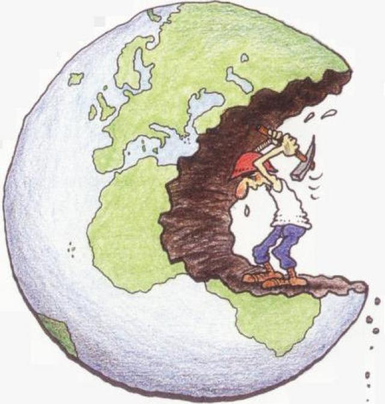

O que são impactos ambientais?
A Resolução CONAMA nº 001 define impacto ambiental como qualquer alteração das propriedades físicas, químicas e biológicas do meio ambiente, causada por qualquer forma de matéria ou energia resultante das atividades humanas que, direta ou indiretamente, dessa forma, os impactos ambientais são por definição, todas possíveis modificações causadas no ambiente pelas operações da empresa. Relacionam-se às consequências, ou seja, aos danos ou efeitos que os aspectos ambientais causam ao meio ambiente. Dentre os principais impactos ambientais, temos:
Principais impactos ambientais
- A saúde, a segurança e o bem-estar da população;
- As atividades sociais e econômicas;
- A biota;
- As condições estéticas e sanitárias do meio ambiente;
- A qualidade dos recursos ambientais.